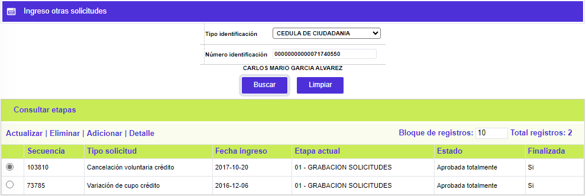
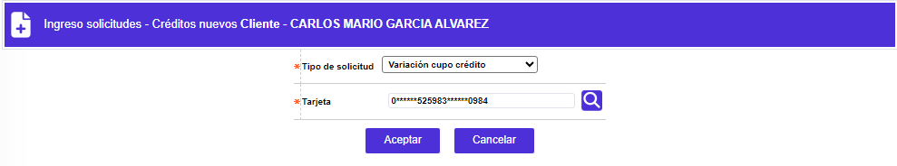
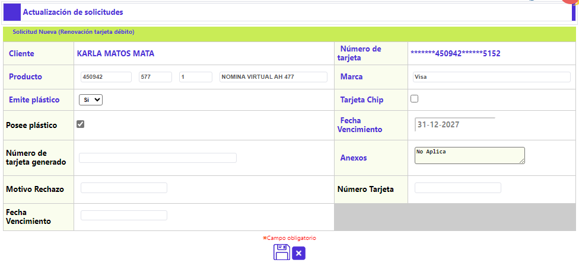
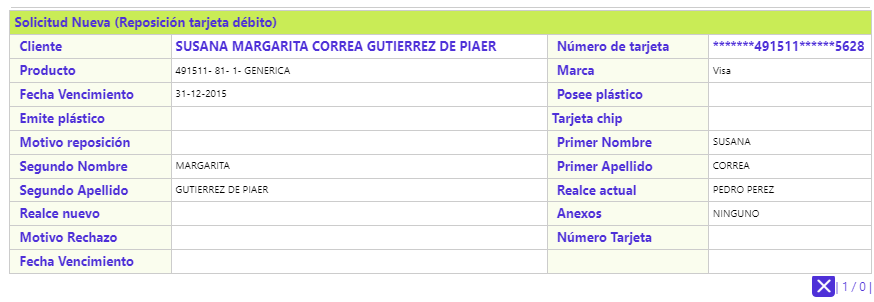
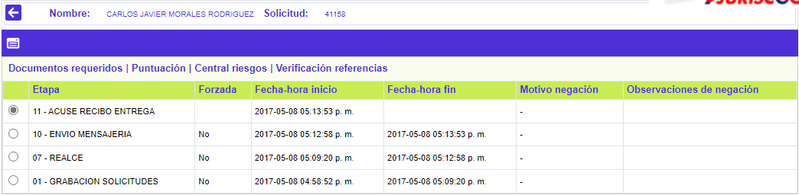

Ingreso otras solicitudes
A través de esta funcionalidad, el sistema permite la captura de otras solicitudes diferentes a nuevo débito, lo que obviamente implica, que el cliente ya deba existir en la base de datos, de hecho, si no existe aún, se notifica al usuario e impide avanzar. Adicionalmente, luego de diligenciar los dos datos de identificación del filtro que aparece por defecto, el sistema efectúa la validación o consistencia de dichos datos.

Si el cliente ya existe en la base, el sistema, despliega el siguiente formulario, cual contiene los enlaces: Consultar etapas, Actualizar, Eliminar, Adicionar y Detalle:

Adicionar: Al activar ese enlace, se despliega el siguiente formulario inicial, mediante el cual, se le debe indicar al sistema, el tipo de solicitud que se requiere ingresar: Reposición débito,Renovación débito o Cambio producto débito, y a continuación, el número de la tarjeta débito correspondiente, para esto último, el sistema cuenta con una funcionalidad que permite la búsqueda, en el caso en que el cliente tenga varias tarjetas a su nombre:


Actualizar: Al activar ese enlace, para una solicitud de Reposición / Renovación, el único campo cuyo contenido puede ser modificado es Anexos, si la solicitud corresponde a Cambio producto débito, además de poder modificar los datos del campo Anexos, el sistema permite cambiar la combinatoria del nuevo producto a solicitar:



Detalle: Al activar ese enlace se despliega un formulario con los datos de la solicitud, ninguno de ellos editable:

Consultar etapas: Al activar ese enlace, se despliega un formulario que, en su encabezado ilustra varios datos que identifican: Tipo solicitud, Fecha ingreso, Etapa actual y Producto, además, permite visualizar el detalle de las diferentes etapas, parametrizadas para el tipo de solicitud y por producto, por las cuales ha avanzado la solicitud o aún no lo ha hecho.
